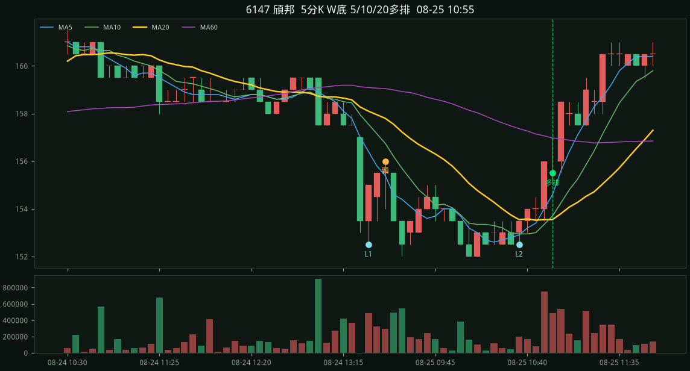
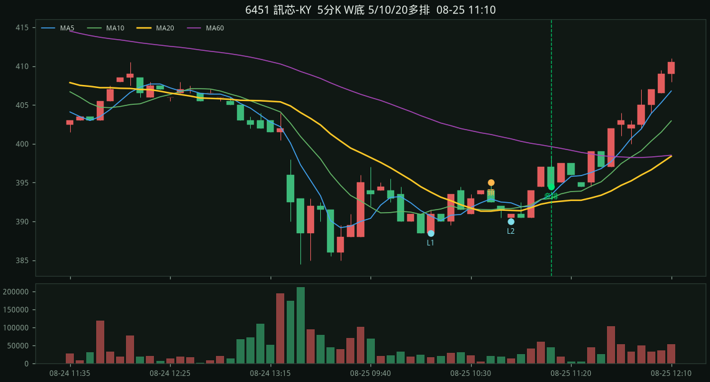
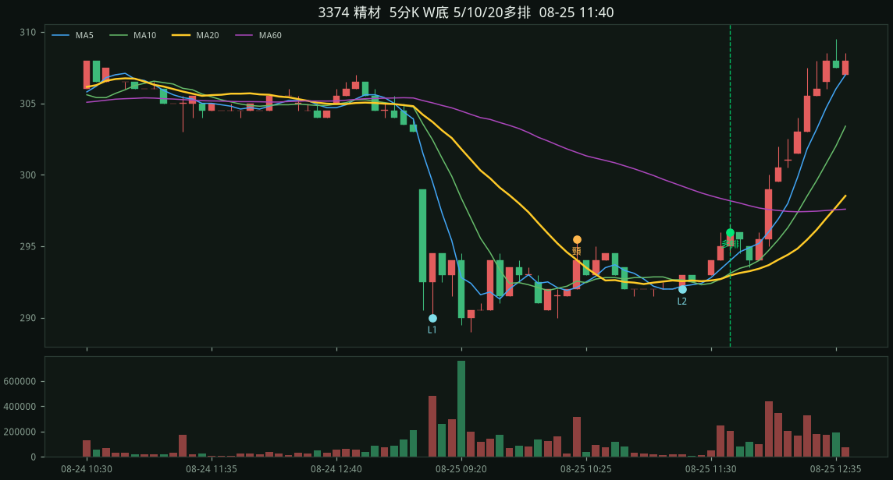
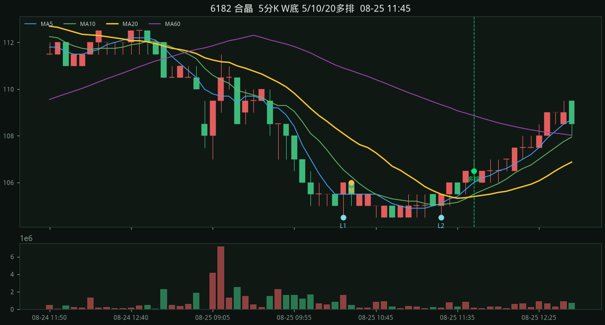
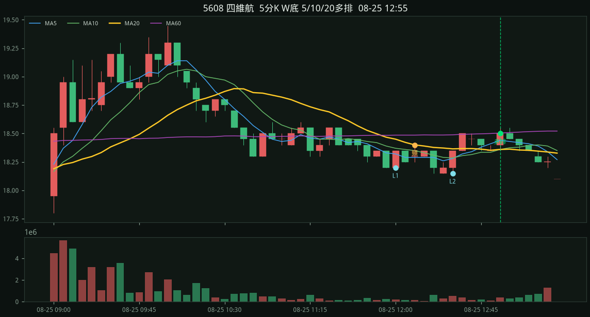

#1 · 3374 精材2026-08-25 10:35
294.50
收盤 294.50 MA5 293.50 > MA10 292.80 > MA20 292.60 L1 290.00 / L2 290.00 / 頸線 294.50 停損 290.00 量度 299.00 彈回 1.55% 站上 0.65% 深度 1.55% 跌幅 6.21%

2026-08-25 · 5d · 股價<700 · 嚴格 · 掃描 100 檔
規則：五分 K 做出 W 底（先大跌、兩個相近低點），等五分 MA5>MA10>MA20 多頭排列才進場。
嚴格：同一天做出 W、09:15 後、先跌 ≥5.5%、頸線深度 ≥1.2%、兩低點價差 ≤1.5%、從低點彈回 1.1%～3.5%、收盤站上 MA20 ≥0.45%，且五分 MA5>MA10>MA20 多頭排列才進場。對齊國巨 515/515→11:50 多排、南亞科 480/482→11:55 多排。
08-25 3374 精材、6451 訊芯-KY、6147 頎邦、3450 聯鈞、1815 富喬、4991 環宇-KY、8271 宇瞻、6538 倉和、2344 華邦電、6182 合晶、2492 華新科、6173 信昌電、2327 國巨、3026 禾伸堂、2408 南亞科、3006 晶豪科、2337 旺宏、3167 大量、5608 四維航、2637 慧洋-KY、2451 創見
收盤 294.50 MA5 293.50 > MA10 292.80 > MA20 292.60 L1 290.00 / L2 290.00 / 頸線 294.50 停損 290.00 量度 299.00 彈回 1.55% 站上 0.65% 深度 1.55% 跌幅 6.21%
收盤 394.00 MA5 392.40 > MA10 391.55 > MA20 391.32 L1 385.00 / L2 388.50 / 頸線 397.00 停損 385.00 量度 409.00 彈回 2.34% 站上 0.68% 深度 3.12% 跌幅 6.75%

收盤 155.50 MA5 154.60 > MA10 153.70 > MA20 153.55 L1 152.50 / L2 152.50 / 頸線 156.00 停損 152.50 量度 159.50 彈回 1.97% 站上 1.27% 深度 2.30% 跌幅 5.90%

收盤 495.50 MA5 494.40 > MA10 493.70 > MA20 493.05 L1 485.50 / L2 486.50 / 頸線 500.00 停損 485.50 量度 514.50 彈回 2.06% 站上 0.50% 深度 2.99% 跌幅 9.99%

收盤 394.50 MA5 393.40 > MA10 392.95 > MA20 392.48 L1 388.50 / L2 390.00 / 頸線 395.00 停損 388.50 量度 401.50 彈回 1.54% 站上 0.52% 深度 1.67% 跌幅 5.66%

收盤 106.00 MA5 104.80 > MA10 104.50 > MA20 104.38 L1 103.00 / L2 103.50 / 頸線 105.50 停損 103.00 量度 108.00 彈回 2.91% 站上 1.56% 深度 2.43% 跌幅 6.31%

收盤 429.00 MA5 426.30 > MA10 425.95 > MA20 425.70 L1 423.00 / L2 424.50 / 頸線 430.00 停損 423.00 量度 437.00 彈回 1.42% 站上 0.78% 深度 1.65% 跌幅 7.68%

收盤 228.00 MA5 226.70 > MA10 225.75 > MA20 225.70 L1 224.00 / L2 224.00 / 頸線 227.00 停損 224.00 量度 230.00 彈回 1.79% 站上 1.02% 深度 1.34% 跌幅 6.70%

收盤 296.00 MA5 294.00 > MA10 293.10 > MA20 292.95 L1 290.00 / L2 292.00 / 頸線 295.50 停損 290.00 量度 301.00 彈回 2.07% 站上 1.04% 深度 1.90% 跌幅 6.21%

收盤 198.00 MA5 195.20 > MA10 194.75 > MA20 194.22 L1 193.00 / L2 193.00 / 頸線 195.50 停損 193.00 量度 198.00 彈回 2.59% 站上 1.94% 深度 1.30% 跌幅 9.07%

收盤 171.50 MA5 171.10 > MA10 170.50 > MA20 170.47 L1 170.00 / L2 169.50 / 頸線 172.50 停損 169.50 量度 175.50 彈回 1.18% 站上 0.60% 深度 1.77% 跌幅 6.49%

收盤 106.50 MA5 106.00 > MA10 105.50 > MA20 105.40 L1 104.50 / L2 104.50 / 頸線 106.00 停損 104.50 量度 107.50 彈回 1.91% 站上 1.04% 深度 1.44% 跌幅 7.66%

收盤 255.50 MA5 255.00 > MA10 253.95 > MA20 253.93 L1 252.00 / L2 251.00 / 頸線 256.00 停損 251.00 量度 261.00 彈回 1.79% 站上 0.62% 深度 1.99% 跌幅 7.57%

收盤 195.50 MA5 195.20 > MA10 193.85 > MA20 193.70 L1 191.00 / L2 190.50 / 頸線 195.50 停損 190.50 量度 200.50 彈回 2.62% 站上 0.93% 深度 2.62% 跌幅 9.71%

收盤 523.00 MA5 522.60 > MA10 520.20 > MA20 519.40 L1 515.00 / L2 515.00 / 頸線 523.00 停損 515.00 量度 531.00 彈回 1.55% 站上 0.69% 深度 1.55% 跌幅 9.51%

收盤 602.00 MA5 601.40 > MA10 598.40 > MA20 598.25 L1 590.00 / L2 592.00 / 頸線 599.00 停損 590.00 量度 608.00 彈回 2.03% 站上 0.63% 深度 1.53% 跌幅 12.37%

收盤 488.50 MA5 486.90 > MA10 485.40 > MA20 485.15 L1 480.00 / L2 482.00 / 頸線 491.00 停損 480.00 量度 502.00 彈回 1.77% 站上 0.69% 深度 2.29% 跌幅 7.92%

收盤 265.50 MA5 265.00 > MA10 263.50 > MA20 263.15 L1 260.00 / L2 260.00 / 頸線 267.50 停損 260.00 量度 275.00 彈回 2.12% 站上 0.89% 深度 2.88% 跌幅 8.46%

收盤 119.50 MA5 118.80 > MA10 118.70 > MA20 118.60 L1 117.50 / L2 118.00 / 頸線 119.50 停損 117.50 量度 121.50 彈回 1.70% 站上 0.76% 深度 1.70% 跌幅 6.81%

收盤 652.00 MA5 650.40 > MA10 648.20 > MA20 647.75 L1 647.00 / L2 638.00 / 頸線 672.00 停損 638.00 量度 706.00 彈回 2.19% 站上 0.66% 深度 5.33% 跌幅 10.97%

收盤 18.50 MA5 18.44 > MA10 18.36 > MA20 18.36 L1 18.20 / L2 18.15 / 頸線 18.40 停損 18.15 量度 18.65 彈回 1.93% 站上 0.76% 深度 1.38% 跌幅 7.16%

收盤 96.50 MA5 96.14 > MA10 95.84 > MA20 95.72 L1 95.40 / L2 95.40 / 頸線 97.10 停損 95.40 量度 98.80 彈回 1.15% 站上 0.81% 深度 1.78% 跌幅 10.06%

收盤 299.00 MA5 298.60 > MA10 298.55 > MA20 297.35 L1 295.00 / L2 296.50 / 頸線 300.00 停損 295.00 量度 305.00 彈回 1.36% 站上 0.55% 深度 1.69% 跌幅 8.31%